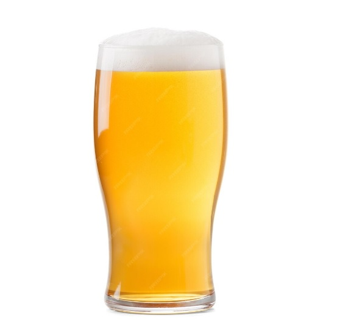
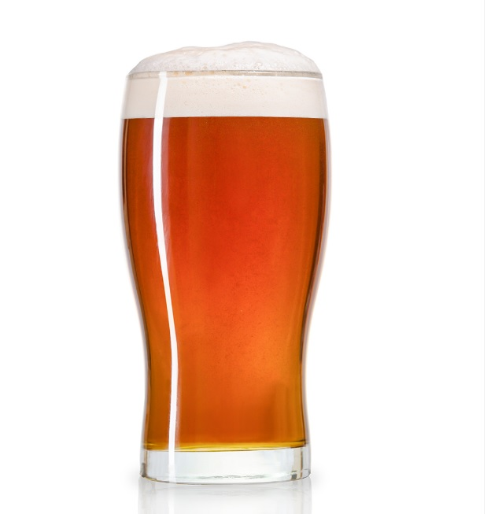
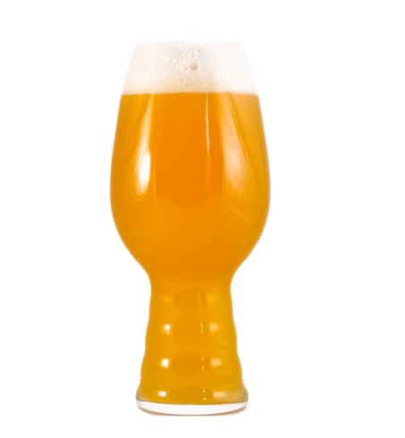

Te invitamos a explorar el arte cervecero y la tradición que se fusionan en cada sorbo. Embárcate en un viaje único donde descubrirás el placer en cada variedad, destilada con dedicación y apasionado compromiso por la excelencia.
NUESTROS PRODUCTOS
Nuestras cervezas
American Ipa

La American IPA, originaria de Estados Unidos, se distingue por su perfil audaz y lupulado, desplegando intensas notas cítricas y florales, mientras su característico color dorado y cuerpo medio crean una experiencia cervecera equilibrada y llena de matices para los amantes de las cervezas intensamente aromáticas.
American Pale Ale

La American Pale Ale (APA), también de raíces estadounidenses, destaca por su sutil equilibrio entre maltas y lúpulos, ofreciendo un perfil de sabor moderadamente lupulado. Sus tonalidades ámbar y cuerpo ligero brindan una experiencia refrescante, mientras que las notas florales y cítricas se entrelazan armoniosamente, proporcionando matices vibrantes a los apasionados de las cervezas con sabores distintivos y una textura cautivadora.
Stout

La Stout, arraigada en la tradición cervecera, se destaca por su tonalidad oscura y cuerpo robusto, ofreciendo una experiencia intensamente aromática. Sus maltas tostadas proporcionan sabores distintivos a café y chocolate, mientras que la textura cremosa completa la experiencia sensorial, convirtiéndola en la elección ideal para aquellos que buscan cervezas con carácter fuerte y complejo.
Golden Ale

La Golden Ale, de origen diverso, se distingue por su tonalidad dorada y cuerpo ligero, ofreciendo una experiencia cervecera suave y refrescante. Su equilibrio entre maltas y lúpulos crea un sabor accesible con sutiles notas frutales, ideal para quienes buscan una cerveza de carácter moderado y fácil de disfrutar.
Honey

La cerveza Honey destaca por su tonalidad dorada y cuerpo ligero, proporcionando una experiencia cervecera suave y refrescante. Esta exquisita cerveza se distingue por su equilibrio perfecto entre la miel y otros ingredientes, creando un sabor único con sutiles notas dulces y florales. Ideal para aquellos que aprecian cervezas con un toque de dulzura, esta opción encantará a los amantes de las cervezas con carácter equilibrado y agradable al paladar.
Red Lager

Red Lager es una Cerveza de cuerpo medio, color cobrizo y acaramelada. Esta variedad debe sus características al particular proceso de caramelización de las maltas con las que se elabora. Se puede combinar a la perfección con platos como choripán, carnes rojas, morrón con huevo o tostados de jamón y queso.
New England Ipa

Debido a la adición de avena y trigo, las cervezas NEIPA se caracterizan por un color casi anaranjado y muy turbio; un color más propio de un zumo de frutas que al de una cerveza. En boca aporta una sensación muy sedosa, controlando mucho el amargor para dejar paso a un sabor afrutado con notas cítricas.